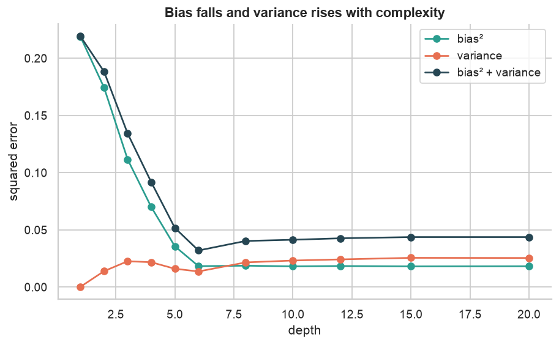
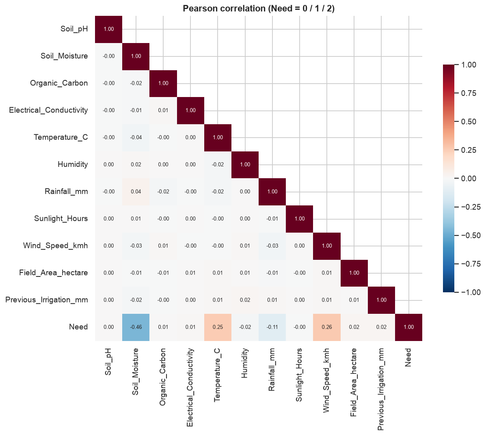
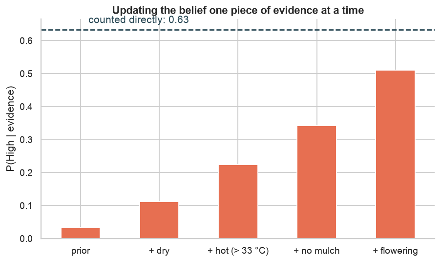
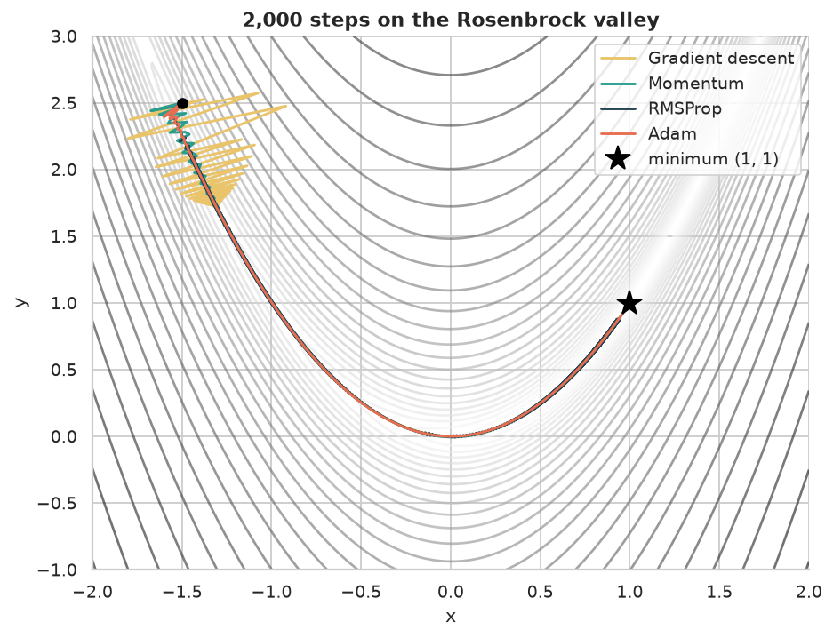
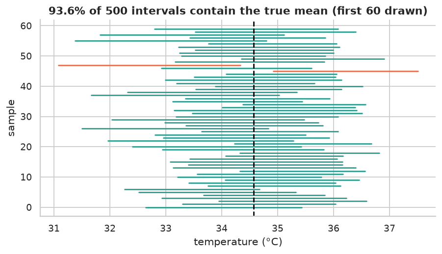
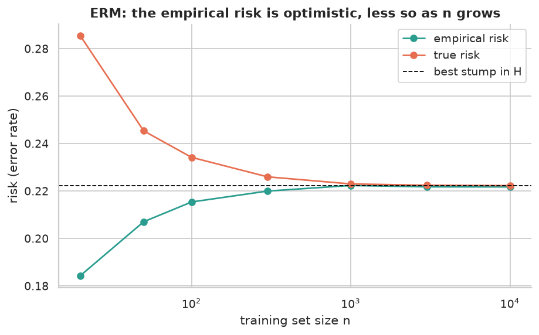

CSE273 · Foundations of Machine Learning
The foundations of machine learning, on one real dataset.
Six notebooks, one per unit of CSE273. Every idea is computed on the Kaggle Playground S6E4 Predicting Irrigation Need data (630,000 fields), and every formula is checked against a library or a numerical answer: the bias–variance split is measured, gradients are verified with finite differences, gradient descent, Momentum, RMSProp and Adam are written from scratch, and PAC bounds are tested empirically.
The reusable parts live in a small tested package, groundwork; the notebooks run unchanged on Kaggle.
Notebooks
Machine learning foundations and NumPy
12 syllabus topics
02 · UNIT IIPandas for data handling
7 syllabus topics
03 · UNIT IIIExploratory data analysis
8 syllabus topics
04 · UNIT IVLinear algebra, probability and calculus
9 syllabus topics
05 · UNIT VStatistics for ML and optimisation
11 syllabus topics
06 · UNIT VIStatistical learning theory
10 syllabus topics
Results






Run it yourself
git clone https://github.com/LuShadowX/Groundwork && cd Groundwork pip install -e ".[dev]" kaggle competitions download -c playground-series-s6e4 -p data && unzip data/*.zip -d data pytest # 16 tests jupyter lab notebooks/ # or open any notebook on Kaggle with the competition attached
Course map
All 57 topics of the CSE273 syllabus, unit by unit, with the notebook section that covers each one.
Unit I: Machine Learning Foundation12 topics
| Syllabus topic | Where |
|---|---|
| Introduction to machine learning | 01 § 1 |
| AI vs machine learning vs data science | 01 § 2 |
| Supervised, unsupervised and reinforcement learning | 01 § 3 |
| Parametric vs non-parametric models | 01 § 4 |
| Generative vs discriminative models | 01 § 4 |
| Machine learning workflow | 01 § 5 |
| Train–test split, overview of evaluation metrics | 01 § 6 |
| Overfitting and underfitting | 01 § 6 |
| Bias–variance trade-off (measured with 30 bootstrap fits) | 01 § 6 |
| Applications and use cases | 01 § 7 |
| NumPy: why NumPy, creating arrays, operations | 01 § 8 |
| Broadcasting rule, matrix operations, random module | 01 § 8 |
Unit II: Pandas for Data Handling7 topics
| Syllabus topic | Where |
|---|---|
| Pandas Series and DataFrame | 02 § 1 |
| Reading and writing CSV files | 02 § 2 |
| Inspecting datasets | 02 § 3 |
| Selection: loc vs iloc; boolean filtering | 02 § 4 |
| Line, bar, histogram, scatter and pie charts | 02 § 5 |
| Customising plots | 02 § 6 |
| Subplots | 02 § 7 |
Unit III: Exploratory Data Analysis8 topics
| Syllabus topic | Where |
|---|---|
| Types of data (quantitative, qualitative) | 03 § 1 |
| Loading data and initial inspection | 03 § 2 |
| Univariate analysis: histogram, box plot, count plot | 03 § 3 |
| Bivariate analysis: scatter, line, violin plots | 03 § 4 |
| Correlation heatmaps and multicollinearity (VIF) | 03 § 5 |
| Skewness and kurtosis | 03 § 6 |
| Patterns, anomalies (outliers) and trends | 03 § 7 |
| EDA workflow integration | 03 § 8 |
Unit IV: Linear Algebra and Calculus9 topics
| Syllabus topic | Where |
|---|---|
| Data structures: scalar, vector, matrix, tensor | 04 § 1.1 |
| Eigenvalues and eigenvectors (power iteration from scratch) | 04 § 1.2 |
| Random variables and probability distributions | 04 § 2.1–2.2 |
| Statistical measures | 04 § 2.3 |
| Types of probability: joint, marginal, conditional | 04 § 2.4 |
| Bayes' theorem and inference | 04 § 3.1 |
| Likelihood vs probability | 04 § 3.2 |
| Functions, partial derivatives and the gradient | 04 § 4.1–4.3 |
| The chain rule | 04 § 4.4 |
Unit V: Statistics for ML11 topics
| Syllabus topic | Where |
|---|---|
| Sampling and population | 05 § 1.1 |
| Hypothesis testing | 05 § 1.2 |
| Confidence intervals | 05 § 1.3 |
| Correlation | 05 § 1.4 |
| Maximum likelihood estimation | 05 § 2.1 |
| Loss (cost) functions | 05 § 2.2 |
| Convex vs non-convex functions | 05 § 3.1 |
| Minima and saddle points | 05 § 3.2 |
| Gradient descent and the learning rate | 05 § 4.1–4.2 |
| Variants of gradient descent (batch, stochastic, mini-batch) | 05 § 4.3 |
| Momentum, RMSProp and Adam (from scratch) | 05 § 5 |
Unit VI: Statistical Learning Theory10 topics
| Syllabus topic | Where |
|---|---|
| Well-posed learning problems (T-P-E) | 06 § 1 |
| Components of a learning system | 06 § 2 |
| Statistical learning framework | 06 § 3 |
| Empirical risk minimisation, overfitting and generalisation | 06 § 4 |
| Inductive bias | 06 § 5 |
| Role of prior knowledge | 06 § 6 |
| PAC learning | 06 § 7 |
| Sample complexity: finite hypothesis space and VC dimension | 06 § 8 |
| No Free Lunch theorem | 06 § 9 |
| Choosing algorithms; Occam's razor | 06 § 10 |